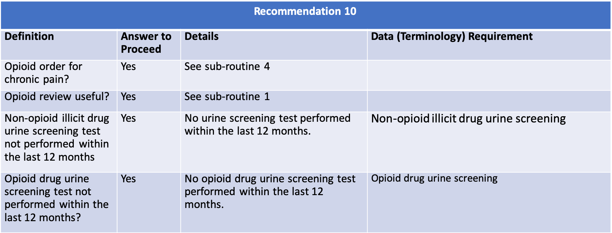
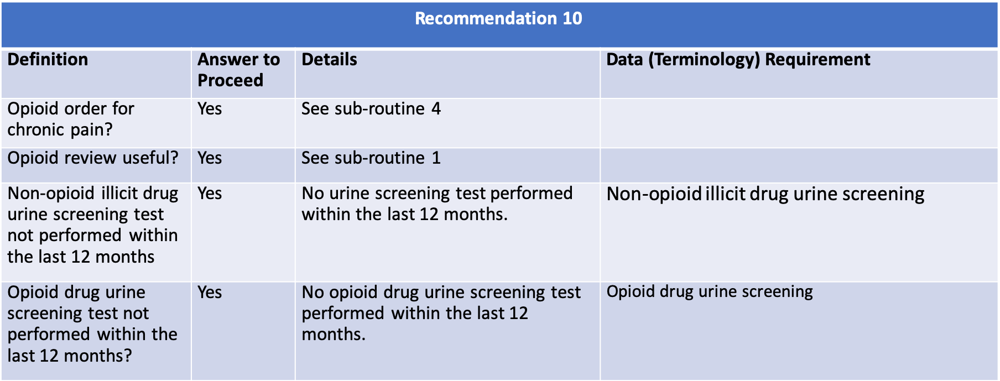

When prescribing opioids for chronic pain, providers should use urine drug testing before starting opioid therapy and consider urine drug testing at least annually to assess for prescribed medications as well as other controlled prescription drugs and illicit drugs (recommendation category: B, evidence type: 4).
 
{% include for-chronic-pain-definitions.html %}
{% include opioid-review-useful-definitions.html %}

{% include for-chronic-pain-definitions.html %}
{% include opioid-review-useful-definitions.html %}
The following artifacts formalize the description of the logic and behavior defined by this recommendation.
| Resource | Type | Description |
|---|---|---|
| CDC Opioid Prescribing Guideline Recommendation #10 | PlanDefinition | Event-Condition-Action rule that implements behavior for CDC Opioid Prescribing Guideline Recommendation #10 |
| Recommendation #10 - urine drug testing when prescribing opioids for chronic pain | Library | Defines the data requirements to support evaluation of recommendation #10 |
| CDC Opioid Prescribing Guideline Recommendation #10 | CQL Source | For reference, the complete CQL content for Recommendation #10 |
| Description | Bundle | CDS Hooks Request | Expected Response |
|---|---|---|---|
| Patient 18 or older. Patient is being prescribed 72 HR Fentanyl 0.075 MG/HR Transdermal System (RxNorm code 197696), once every 12 days for 30 days. This triggers the message that urine drug screening is recommended with the following three feedback options: i. Perform the screening ii. Indicate that the prescription is not for chronic pain management and snooze for 3 months iii. Indicate that it is not applicable, log a comment and snooze for 3 months. | Test Bundle | Request JSON | Response JSON |